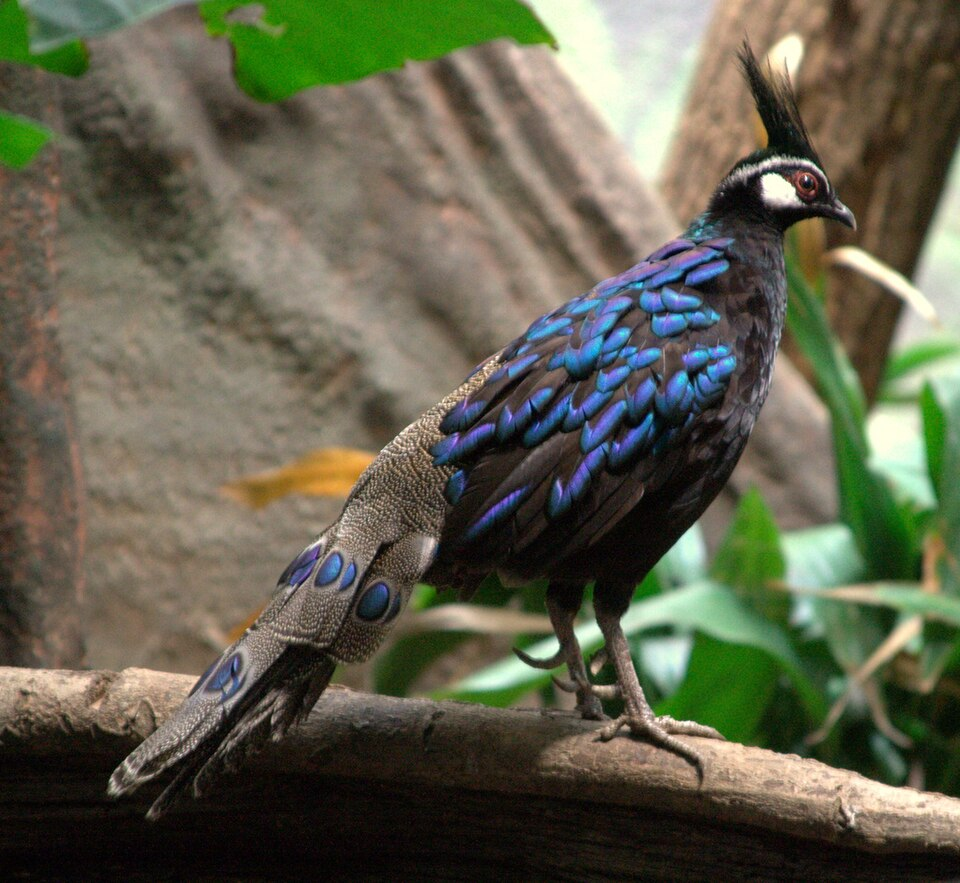

Start with what you saw
A photo is a good place to begin.
Bring a bird photo to Wingdex and get a thoughtful identification to explore. Gemini-powered suggestions can point you toward a species and its field marks—especially useful when you’re still learning what to look for.
✳AI can be uncertain. Treat an identification as a helpful starting point, not scientific confirmation.